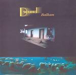

| Artist: | D Sound |
| Title: | Balkan |
| Label: | Stereoperiferic BGCD 147 |
| Length(s): | 61 minutes |
| Year(s) of release: | 2005 |
| Month of review: | [11/2005] |
| 1) | Karpat0medencei Hangulat | 4.17 |
| 2) | Doromb | 4.55 |
| 3) | Balkanon Innen, Balkanon Tul | 5.18 |
| 4) | Kozep-europa | 5.26 |
| 5) | Feny | 6.11 |
| 6) | Challanger | 4.47 |
| 7) | 73 Mp - Challanger 2 | 13.04 |
| 8) | Jegvilag | 4.05 |
| 9) | 1969 | 4.08 |
| 10) | Gyemant Nap | 6.30 |
Opener Karpat-medencci Hangulat opens the album with an elongated EM-type synth section, that is not unlike mid-eighties Tangerine Dream material, including the a-little-too-mechanical drums of the era. Even though it easily shifts into Doromb, this track by no means is stylistacally similar: it's closer to late seventies Alan Parsons Project instrumentals, with some added voice effects. Both tracks have a certain joie de vivre that draws the attention. Nalkanon Innen, Balkanon Tul is somewhat slower and with its use of (what sounds like) midi guitar moves in the direction of current day Gandalf, although TD remains close. It does lack some of the spirit of the previous tracks, though. Kozep-Europa picks up the speed a bit, bringing some stuff that is a tad more sparkling.
After these four instrumentals Feny changes the sound completely: the track is led by both male and female vocals (and even a children's choir), all in Hungarian, with somewhat sparse accompaniement in the back, mostly with Gandalf-guitar. Feny sounds pretty alien to western ears (like mine) and to the overall sound of this album. It makes me hurry to the skip button.
After this track we return to the more western sound of the first four tracks. Challanger is once again rather up tempo. 73 Mp - Challanger 2 is longer and does not manage to maintain the tension, developing a somewhat jangly middle section dominated by assorted guitar sounds, at times dueling away (gently). Over time we move into a more electronical section, but this does not succeed in returning the exitement.
Second voiced track Jegvilag lacks the vocal oppression of Feny, sounding a lot friendlier, moving into the sort of field stylistically in which we might find an RPWL: warm synths, supportive guitar and nicely build near bombastic chorus swimming in more sparse refrains. A nice bit, this, even if far apart from the other tracks. Within in its vein this is definitely a good one.
1969 returns to the style of the opening tracks, adding in spoken fragments of dreams from the sixties space-race era. Gyemant Nap is another instrumental, letting the speed reign slip just a little. Closer Kozelebb A Naphoz is an outro, winding down nicely.